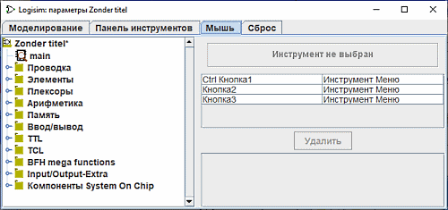
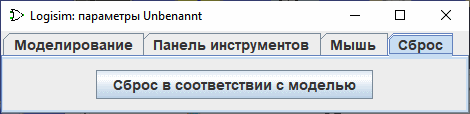

Вкладка «Мышь»
По умолчанию, когда вы щёлкаете мышью на холсте Logisim, будет использоваться выбранный в данный момент инструмент. Если вы щёлкнете правой кнопкой мыши или выполните щелчок с зажатой клавишей Control, то под курсором появится контекстное меню для текущего компонента.
Logisim позволяет переопределить это поведение, избавляя от необходимости постоянно переходить к панели инструментов или к навигатору (это также может быть очень удобно, если вы левша). Каждая комбинация кнопки мыши и клавиш-модификаторов (любой набор клавиш Shift, Control и Alt) может быть привязана к отдельному инструменту. Вкладка «Мышь» позволяет настроить эти привязки.

-
С левой стороны находится панель «Навигатор», где вы можете выбрать инструмент для привязки.
-
В правой верхней части находится область (прямоугольник), внутри которой нужно выполнить щелчок с использованием нужной комбинации кнопок и клавиш. Например, если вы хотите прокладывать новые проводники при помощи перетаскивания с зажатой клавишей Shift, сначала выберите «Инструмент разводки» на панели «Навигатор» (в библиотеке «Базовые»), а затем выполните Shift + щелчок мышью в области с надписью «Click Using Combination To Map Wiring Tool». Если данная комбинация уже использовалась, то старая привязка будет заменена новым инструментом.
-
Ниже этой области отображается список текущих привязок. Обратите внимание, что все комбинации, отсутствующие в списке, по умолчанию используют выбранный в данный момент на панели инструментов или в навигаторе инструмент.
-
Под таблицей расположена кнопка Удалить, с помощью которой можно стереть выбранную привязку. После удаления эта комбинация мыши начнёт использовать текущий активный инструмент.
-
Ещё ниже отображается список атрибутов для инструмента, выбранного в таблице привязок. Каждому привязанному к кнопкам мыши инструменту соответствует собственный независимый набор атрибутов (отличающийся от глобальных настроек этого же инструмента на панели инструментов или в навигаторе). Вы можете настроить эти значения здесь.
Вкладка «Сброс»

Эта вкладка очень проста. Нажатие на кнопку Сбросить все настройки приведёт к восстановлению всех настроек проекта до значений по умолчанию, определённых шаблоном на вкладке «Шаблон».
Далее: Руководство пользователя.